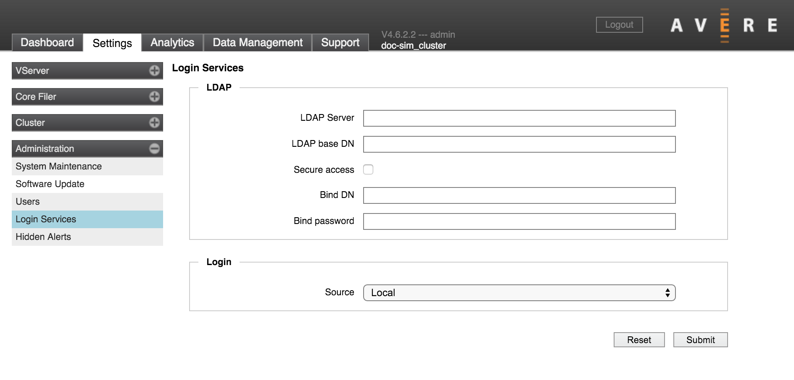
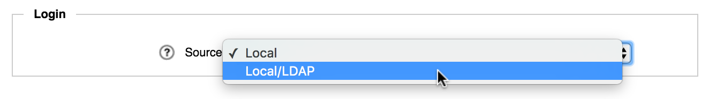

Administration > Login Services
{kind=link}
On the Login Services page, you can configure an LDAP or Active Directory (AD) server to supply usernames and groups for authorizing access to the Avere Control Panel.
Note
This page only configures directory services for the cluster login (Avere Control Panel). This system is not used to authenticate client requests (see the Cluster > Directory Services settings page to configure client access).
There are two steps to configuring LDAP/AD-based login services:
- Use the LDAP section to specify one or more LDAP or AD servers
- Use the Login section to choose LDAP as the user source
You must also create an AvereAdmins group in your directory services system, as described below.
The Avere Admins Group
Avere OS recognizes users in a group named AvereAdmins as having administrator privileges for the cluster. Users in the AvereAdmins group automatically have full access to the Avere Control Panel and command-line interface:
- AvereAdmins users have full access privileges on the Avere Control Panel - they can both monitor and configure the cluster from the web interface.
- AvereAdmins users can pass command-line API calls as an administrative user.
You can set up this group on your AD or LDAP server. Follow the standard procedure for creating user groups on your AD or LDAP system.
Specifying the Server
Use the LDAP section of the Login Services page to specify the servers to use for authenticating users logging in to the cluster. Fill in the directory service information as required.
- LDAP Server
- Enter the IP address or fully qualified domain names for up to three LDAP or AD servers. Separate multiple entries with spaces.
- LDAP base DN
- Enter the base name of the LDAP domain.
- Secure access
Check this box if you want the system to encrypt all LDAP connections.
When you check the Secure access box, additional security options appear:
- Require valid certificate checkbox - Uncheck this box if you use self-signed certificates.
- CA certificate URI field - If using a certificate authority, you must specify the resource identifier for downloading a signed certificate in this field. Click Download Now to test the URI by retrieving the certificate. Otherwise, the system will attempt to download the certificate when you click Submit.
- Bind DN and Bind password
- Name and password to transmit for secure LDAP connections
Specifying the Login Username Sources
Use the drop-down selector in the Login section of the page to choose the source for login names.
{kind=link}
Choose Local to use only the individual accounts set up on the Administration > Users page, or Local/LDAP to use both the individual accounts and the LDAP or AD servers configured on this page.
You cannot unselect the Local option (that is, you cannot manage logins exclusively from a directory server); the Avere Control Panel always must have a locally defined administrator account.